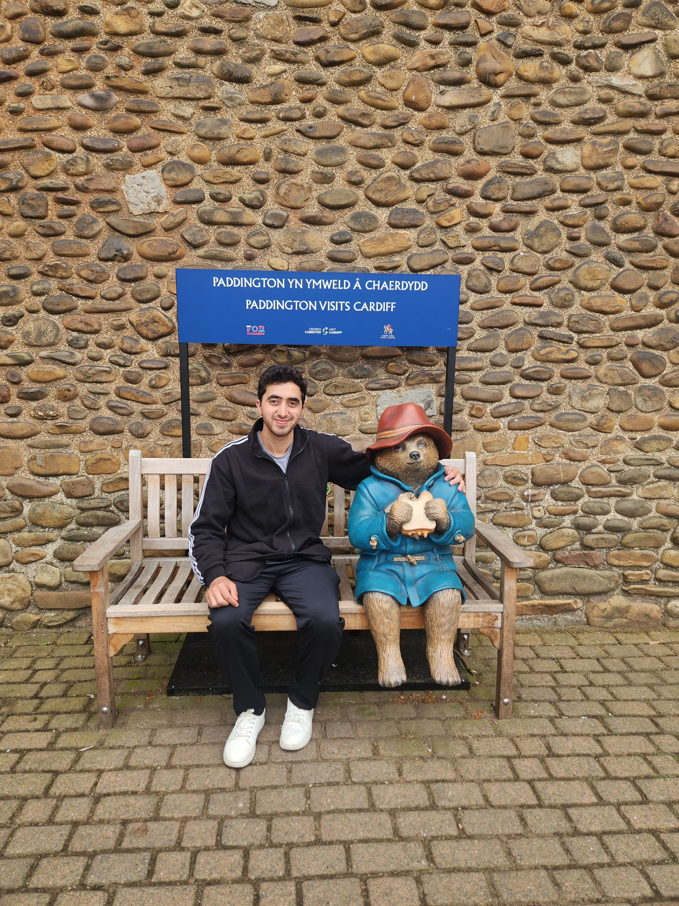

NHS Digital Twin — Proof of Concept
A simulation-based digital twin exploring NHS care pathway scenarios, published at IEEE IMCOM 2026.
Digital twinSimulationHealthcare
View on GitHub
Fawaz Ahmed Dar — AI Researcher & Data Scientist
I build and test machine learning systems on real, messy data: spectroscopy scans, vibration signals, clinical records and behavioural logs. Recent work includes a validated breast tissue classifier at 86.83% accuracy and a published NHS digital twin proof of concept.

I'm a Newcastle-based AI researcher and data scientist with experience across healthcare AI, applied NLP, real-time backend systems and security-aware machine learning. My work has been published at IEEE ISBCom 2026, IEEE IMCOM 2026 and GMCSET 2025.
I currently split my time between a research assistant post at the University of Sunderland, where I work on FTIR-based tissue classification with NHS-linked data, and independent consulting for teams building applied machine learning systems.
Formal training in data analytics and computer science.
Roles spanning data science, applied machine learning and healthcare technology since 2022.
Selected work across healthcare AI, applied NLP and real-time systems.
A simulation-based digital twin exploring NHS care pathway scenarios, published at IEEE IMCOM 2026.
Corrected six pipeline faults in an FTIR spectroscopy classifier for a 78-patient dataset, reaching a validated macro F1 of 0.8184 with SHAP-based interpretability.
A graph neural network platform for temporal habit modelling built on Neo4j, published at GMCSET 2025.
A pulmonary fibrosis detection system using EfficientNet-B5 and quantile regression on DICOM imaging data, built as a BSc final year project.
A retrieval-augmented generation workbench for on-premises analytics, built with FastAPI, React, vLLM and llama.cpp, reaching sub-1.5 second time-to-first-token.
An event-driven marketing automation engine using FastAPI, Celery, Redis and FAISS, triggering messages in under 250 milliseconds.
Peer-reviewed and conference-published research.
Research on hallucination mitigation techniques for large language models.
An NHS digital twin proof of concept for care pathway simulation.
HabitGraph, a graph neural network platform for temporal habit modelling.
Certifications: NIHR Good Clinical Practice, Microsoft Azure AZ-900 (Azure Fundamentals).
Get focused help on an AI or data project.
Email me at fawazdar@yahoo.com with a short outline of what you need help with. I'll confirm scope and schedule within one to two working days.
Email fawazdar@yahoo.comAfter paying, please email your payment confirmation to fawazdar@yahoo.com so the session can be scheduled.